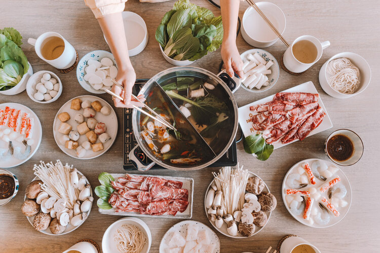

What is Chinese Hot pot?
Chinese Hot Pot is an interactive meal in which diners sit around a simmering pot of soup at the center of the table with various raw ingredients - meat, seafood, vegetables, tofu, and carbs.
Hotpot is enjoyed on winter days. This dish is originated in China.
For more history about hotpot Click here
Equipment needed to have hotpot at home
- Heat source
- Pot
- Chopsticks
- Metal hot pot baskets/wire ladles
Ingredients to bring to the table
- Chinese leafy greens - pick as many as you want
- Mushrooms
- Thin slices of Beef
- Thin slices of Pork
- Thin slices of Pork Belly
- Shrimp
- Tofu
- Frozen dumplings
- Thin noodles
- Soy sauce
- Dipping sauce of your liking
- Broth
- Chopped cilantro
Instructions
- Place boiling soup base or stock in a wide, shallow pot the center of the table on a portable electric burner
- Place individual plates of raw ingredients on the table, along with dipping sauce.
- Have each diner mix their own dipping sauce while the pot of soup comes to a boil.
- Once boiling, begin adding ingredients to the pot. Be sure to cook ingredients through before consuming.
- Allow the pot to boil for at least 30 seconds to 1 minute after adding any raw meat or seafood
Enjoy!
Return to top
Back